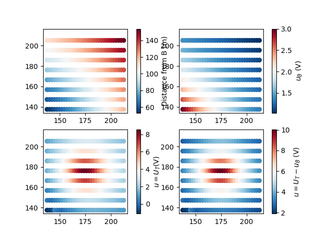
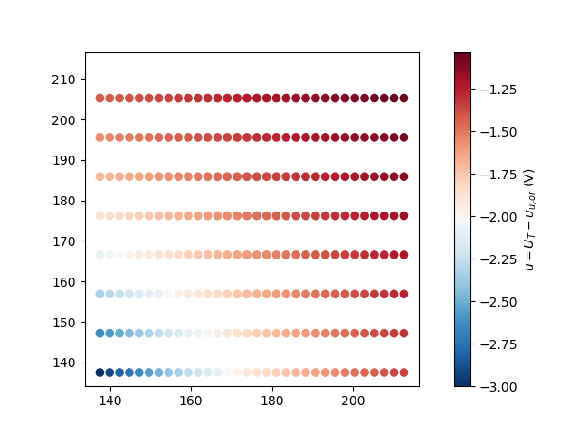
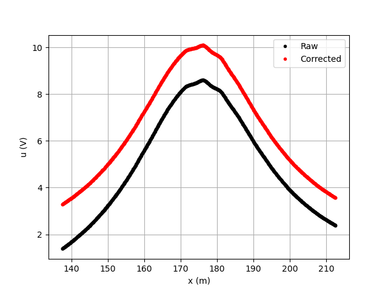
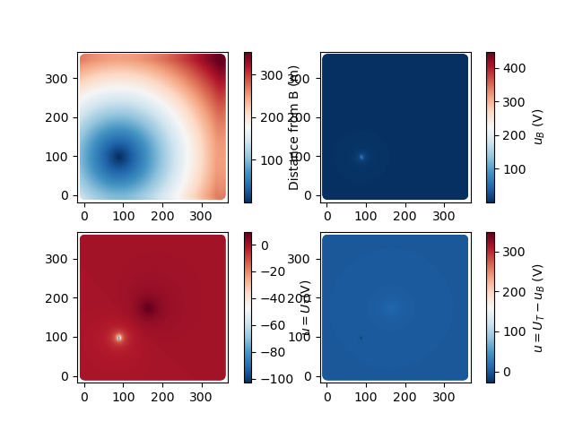
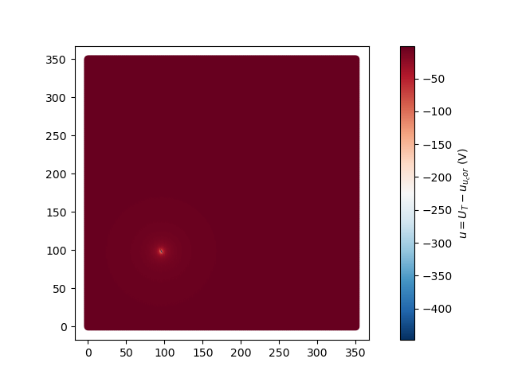
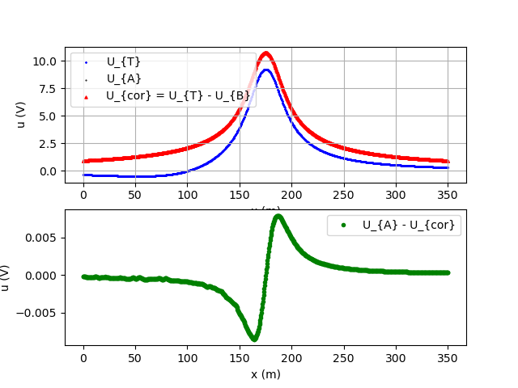
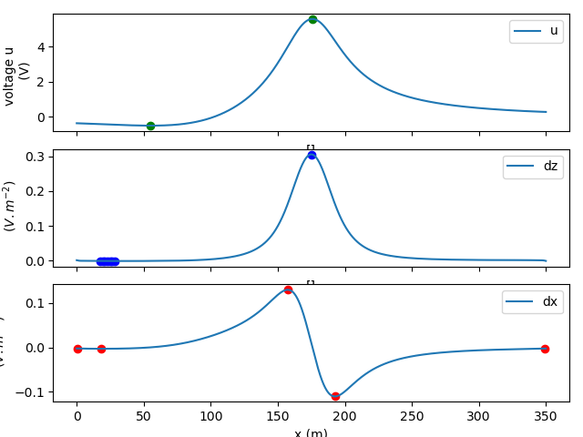
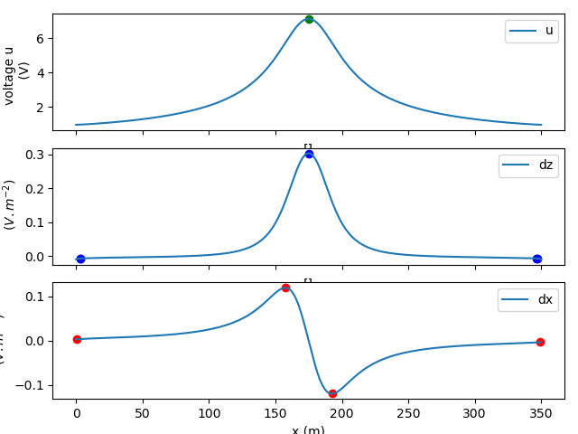

Note
Click here to download the full example code
Preprocessing of MALM for dEXP
Important
This code shows how to remove the influence of the return electrode B and correct as much as it is possible the field before dEXP analysis.
Calculations uses utils_dEXP, while plotting uses the plot_dEXP module.
Application on a anomaly of electrical resistivity (1000 \(Omega.m^{-1}\) of contrast).
The model data was created using geometric objects from pygimli.meshtools. The forward simulation of the data was done using pygimli.ERTsimulate module.
See also
This is part of a larger project aiming at inverting current sources density (see more at: https://icsd-dev.readthedocs.io/en/latest/)
Tip
See getting-started in order to use pyDEXP and reproduce the results. Forward simulation data are available on the Github.
References
Rucker, C., Gunther, T., Wagner, F.M., 2017. pyGIMLi: An open-source library for modelling and inversion in geophysics, Computers and Geosciences, 109, 106-123, doi: 10.1016/j.cageo.2017.07.011
import lib.utils_dEXP as uEXP
import lib.dEXP as dEXP
import lib.plot_dEXP as pEXP
import lib.set_parameters as para
from fatiando.vis.mpl import square
from fatiando import gridder
import matplotlib.pyplot as plt
from mpl_axes_aligner import align
import loadmalm.Load_sens_MALM as MALM
Import MALM data total field U_{T} = U{a} - U{b} The total voltage is the superposition of the injection +I on electrode A (masse) and injection -I on the return (and remote) electrode B
# filenames = ['MSoilR1000.0AnoR1Z-13.75W15H2.5L5S0Noise0', # Ratio = 1000
# 'MSoilR1AnoR1Z-13.75W15H2.5L5S0Noise0']
filenames = ['MSoilR1000.0AnoR1Z-13.75W15H2.5L5S0Noise0']
#filenames = ['MSoilR1AnoR1Z-13.75W15H2.5L5S0Noise0']
for fi in filenames:
# Load data
xp, yp, z, U, maxdepth, shape, p1, p2, SimName, model_prop= MALM.load_MALM_sens3d(filename='./loadmalm/' +
fi + '.pkl')
Bpos= model_prop['EA_EB_EN'][1]
uT_elecs= model_prop['u_elecs']
xyzs = model_prop['elecs']
uA = model_prop['uAz0_grid'].T[3]
uT = model_prop['uTz0_grid'].T[3]
xp, yp, zp = model_prop['uTz0_grid'].T[0:3]
parameters = para.set_par(shape=shape,max_elevation=maxdepth)
zp, qorder, nlay = parameters[2:5]
# minAlt_ridge, maxAlt_ridge = parameters[5:7]
max_elevation = 50
minAlt_ridge = max_elevation*0.05
maxAlt_ridge = max_elevation*0.65
x1, x2, z1, z2 = [max(xp)/2-model_prop['HWD'][1]/2,max(xp)/2 + model_prop['HWD'][1]/2,
model_prop['HWD'][2]+ model_prop['HWD'][0]/2,
model_prop['HWD'][2]- model_prop['HWD'][0]/2]
xxzz = [x1, x2, z1, z2]
CT = model_prop['SoilR']/model_prop['AnoR']
fix_peak_nb = 4
smooth = False
interp = True
#%%
shape = (200,200)
_,_,uA = gridder.interp(xp,yp,uA,shape)
xp,yp,uT = gridder.interp(xp,yp,uT,shape)
#%%
# remove B return electrode effects using :mod:`uEXP.cor_field_B` using a resistivity of 1 Ohm.m
U_cor = uEXP.cor_field_B(xyzs[:-3,0],xyzs[:-3,1],xyzs[:-3,2],uT_elecs,Bpos,
rho=model_prop['SoilR'])
#%%
# Compare the voltage seen by the surface electrode using 2d plot over a line
p1_elecs= [min(xyzs[:-3,0]),(max(xyzs[:-3,0])+min(xyzs[:-3,0]))/2]
p2_elecs= [max(xyzs[:-3,0]),(max(xyzs[:-3,0])+min(xyzs[:-3,0]))/2]
xx, yy, distance, profile = gridder.profile(xyzs[:-3,0],xyzs[:-3,1], uT_elecs, p1_elecs, p2_elecs, 1000)
plt.figure()
# plt.title(strname + '_data' + str(ZZ), fontsize=15)
plt.plot(xx, profile, '.k',label='Raw')
xx, yy, distance, profile = gridder.profile(xyzs[:-3,0],xyzs[:-3,1], U_cor, p1_elecs, p2_elecs, 1000)
plt.plot(xx, profile, '.r',label='Corrected')
plt.grid()
plt.xlabel('x (m)')
plt.ylabel('u (V)')
plt.legend()
#%%
# Compare with numerical solution
uT_field_cor = uEXP.cor_field_B(xp,yp,zp,uT,Bpos,rho=model_prop['SoilR'])
#%%
# Compare plot over a line
xx, yy, distance, puT = gridder.profile(xp,yp, uT, p1, p2, 1000)
plt.figure()
plt.subplot(2,1,1)
plt.scatter(xx, puT, c='b', marker='*', s=1, label='U_{T}')
xx, yy, distance, puA = gridder.profile(xp,yp, uA, p1, p2, 1000)
plt.scatter(xx, puA, c='k', marker='.', s=1, label='U_{A}')
xx, yy, distance, puT_field_cor = gridder.profile(xp,yp, uT_field_cor, p1, p2, 1000)
plt.scatter(xx, puT_field_cor, c='r', marker='^', s=5, label='U_{cor} = U_{T} - U_{B}')
plt.grid()
plt.legend()
plt.xlabel('x (m)')
plt.ylabel('u (V)')
plt.subplot(2,1,2)
diff1 = puT - puA
diff2 = puA - puT_field_cor
# plt.plot(xx, diff1, '.b', label='U_{T} - U_{A}')
plt.plot(xx, diff2, '.g', label='U_{A} - U_{cor}')
plt.xlabel('x (m)')
plt.ylabel('u (V)')
plt.legend()
- 
- 
- 
- 
- 
- 
Run dEXP over clear and raw field data
U = [uT,uA]
# MALM DATA synthetic anomaly: analysis of sensitivity
MESH = []
LABEL = []
DF_F = []
DF_FIT = []
XXZZ = []
CTm = []
import numpy
for i, ui in enumerate(U):
#%%
# Plot the data
# pEXP.plot_line(xp, yp, ui,p1,p2, interp=interp, Xaxis='y')
#%%
# Pad the edges of grids (if necessary)
# xp,yp,U, shape = dEXP.pad_edges(xp,yp,U,shape,pad_type=0) # reflexion=5
# pEXP.plot_line(xp, yp,ui,p1,p2, interp=interp)
#%%
# Upward continuation of the field data
mesh, label_prop = dEXP.upwc(xp, yp, zp, ui, shape,
zmin=0, zmax=max_elevation, nlayers=nlay,
qorder=qorder)
# plt, cmap = pEXP.plot_xy(mesh, label=label_prop, Xaxis='y')
# plt.colorbar(cmap)
#%%
# Ridges identification
# dEXP.ridges_minmax_plot(xp, yp, mesh, p1, p2,
# label=label_prop,
# fix_peak_nb=2,
# Xaxis='y',
# method_peak='find_peaks',
# showfig=False)
# or find_peaks or peakdet or spline_roots
D = dEXP.ridges_minmax(xp, yp, mesh, p1, p2,
label=label_prop,
fix_peak_nb=fix_peak_nb,
method_peak='find_peaks',
Xaxis='y',
smooth=smooth,
returnAmp=True,
showfig=True
)
dfI, dfII, dfIII = D[0:3]
df = dfI, dfII, dfIII
hI, hII, hIII = D[3:6]
heights = D[3:6]
#%%
fig = D[-1]
ax_list = fig.axes
ax_list[0].set_xlabel([])
ax_list[1].set_xlabel([])
ax_list[2].set_xlabel('x (m)')
ax_list[0].set_visible(True)
ax_list[0].set_ylabel('voltage u \n (V)')
ax_list[1].set_ylabel('voltage\n ($V.m^{-2}$)')
ax_list[2].set_ylabel('voltage \n ($V.m^{-2}$)')
#ax = plt.gca()
ax_list[0].xaxis.set_ticklabels([])
ax_list[1].xaxis.set_ticklabels([])
fig
if i==0:
savename= 'fig2a_SI'
else:
savename= 'fig2b_SI'
fig.savefig(savename+'.png', dpi=400, bbox_inches = "tight")
fig.savefig(savename+'.svg', dpi=400, bbox_inches = "tight")
fig.savefig(savename+'.pdf', bbox_inches = "tight")
#%%
# Plot ridges over continuated section
# fig = plt.figure()
# ax = plt.gca()
# pEXP.plot_xy(mesh, label=label_prop, ax=ax) #, ldg=)
# pEXP.plot_ridges_harmonic(dfI,dfII,dfIII,ax=ax)
#%%
# Filter ridges (regionally constrainsted)
D_f = dEXP.filter_ridges(dfI,dfII,dfIII,
minDepth=minAlt_ridge,
maxDepth=maxAlt_ridge,
minlength=5,rmvNaN=True,
xmin=100, xmax=300,
Xaxis='y',
heights=heights)
# df_f = dfI_f, dfII_f, dfIII_f
dfI_f, dfII_f, dfIII_f = D_f[0:3]
hI_f, hII_f, hIII_f = D_f[3:6]
heights = D_f[3:6]
# dfI_f,dfII_f, dfIII_f = dEXP.filter_ridges(dfI,dfII,dfIII,
# Xaxis='y',
# minDepth=minAlt_ridge,
# maxDepth=maxAlt_ridge,
# minlength=7,rmvNaN=True)
# #,
# #xmin=100, xmax=300)
df_f = dfI_f, dfII_f, dfIII_f
#%%
# plot ridges fitted over continuated section
# fig = plt.figure()
# ax = plt.gca()
# pEXP.plot_xy(mesh, label=label_prop, ax=ax) #, ldg=)
# pEXP.plot_ridges_harmonic(dfI_f,dfII_f,dfIII_f,ax=ax,label=True)
df_fit = dEXP.fit_ridges(df_f, rmvOutliers=True) # fit ridges on filtered data
# pEXP.plot_ridges_sources(df_fit, ax=ax, z_max_source=-max_elevation*1.4,
# ridge_type=[0,1,2],ridge_nb=None)
# square([x1, x2, z1, z2])
# plt.annotate(CT,[(x1 + x2)/2, -(z1+z2)/2])
#%%
# save data loop
MESH.append(mesh)
LABEL.append(label_prop)
DF_F.append(df_f)
DF_FIT.append(df_fit)
XXZZ.append(xxzz)
CTm.append(CT)
- 
- 
Out:
/home/ben/Documents/GitHub/BenjMy/dEXP_imaging/fatiando/gravmag/transform.py:183: UserWarning: Using 'height' <= 0 means downward continuation, which is known to be unstable.
"which is known to be unstable.")
NaN or Inf detected - trying to remove
/home/ben/miniconda3/envs/DEXP/lib/python3.6/site-packages/scipy/optimize/minpack.py:829: OptimizeWarning: Covariance of the parameters could not be estimated
category=OptimizeWarning)
/home/ben/Documents/GitHub/BenjMy/dEXP_imaging/fatiando/gravmag/transform.py:183: UserWarning: Using 'height' <= 0 means downward continuation, which is known to be unstable.
"which is known to be unstable.")
NaN or Inf detected - trying to remove
/home/ben/miniconda3/envs/DEXP/lib/python3.6/site-packages/scipy/optimize/minpack.py:829: OptimizeWarning: Covariance of the parameters could not be estimated
category=OptimizeWarning)
differences between ridges identified using the raw MALM and the preprocessed (having removed the current return electrode influence) MALM. Even though the effect on the graphs above seems minimal, so is not for the ridges. The black square defines the anomaly position and extension.
i = 0
dfI_f,dfII_f,dfIII_f = DF_F[i]
fig, ax1 = plt.subplots(figsize=(15,3))
x1, x2, z1, z2 = XXZZ[i]
square([x1, x2, z1, z2])
plt, cmap = pEXP.plot_xy(MESH[i], label=LABEL[i], ax=ax1, Xaxis='y',
Vminmax=[0,10])
plt.colorbar(cmap, label='upwc voltage\n($V.m^2$)' )
pEXP.plot_ridges_harmonic(dfI_f,dfII_f,dfIII_f,ax=ax1,label=True)
df_fit = dEXP.fit_ridges(df_f, rmvOutliers=False) # fit ridges on filtered data
ax2 = pEXP.plot_ridges_sources(DF_FIT[i], ax=ax1, z_max_source=-max_elevation*1.2,
ridge_type=[0,1,2],ridge_nb=None,
xmin=100, xmax=250)
ax1.set_xlabel('x (m)')
fig.savefig('fig2c_SI.png', dpi=400, bbox_inches = "tight")
fig.savefig('fig2c_SI.svg', dpi=400, bbox_inches = "tight")
fig.savefig('fig2c_SI.pdf', dpi=400, bbox_inches = "tight")
Out:
/home/ben/miniconda3/envs/DEXP/lib/python3.6/site-packages/scipy/optimize/minpack.py:829: OptimizeWarning: Covariance of the parameters could not be estimated
category=OptimizeWarning)
i = 1
dfI_f,dfII_f,dfIII_f = DF_F[i]
fig, ax1 = plt.subplots(figsize=(15,3))
x1, x2, z1, z2 = XXZZ[i]
square([x1, x2, z1, z2])
plt, cmap = pEXP.plot_xy(MESH[i], label=LABEL[i], ax=ax1, Xaxis='y',
Vminmax=[0,10])
plt.colorbar(cmap, label='upwc voltage\n($V.m^2$)' )
pEXP.plot_ridges_harmonic(dfI_f,dfII_f,dfIII_f,ax=ax1,label=True)
df_fit = dEXP.fit_ridges(df_f, rmvOutliers=True) # fit ridges on filtered data
ax2 = pEXP.plot_ridges_sources(DF_FIT[i], ax=ax1, z_max_source=-max_elevation*1.2,
ridge_type=[0,1,2],ridge_nb=None,
xmin=100, xmax=250)
ax1.set_xlabel('x (m)')
fig.savefig('fig2d_SI.png', dpi=400, bbox_inches = "tight")
fig.savefig('fig2d_SI.svg', dpi=400, bbox_inches = "tight")
fig.savefig('fig2d_SI.pdf', dpi=400, bbox_inches = "tight")
Out:
/home/ben/miniconda3/envs/DEXP/lib/python3.6/site-packages/scipy/optimize/minpack.py:829: OptimizeWarning: Covariance of the parameters could not be estimated
category=OptimizeWarning)
Total running time of the script: ( 2 minutes 3.017 seconds)